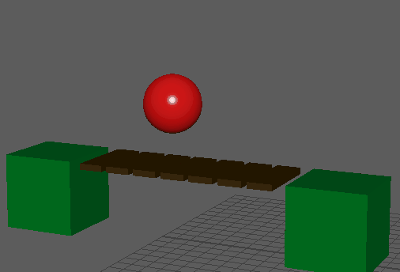

- 在 FX 菜单集中，选择>
 。
。
- 约束类型(Constraint Type)
- 可以从以下约束类型中选择：
- 点(Point)
- 铰链(Hinge)
- 滑块(Slider)
- 圆锥体扭曲(ConeTwist)
- 六个自由度(Six Degrees-of-Freedom)
- 弹簧铰链(Spring Hinge)
- 弹簧 6 个自由度(Spring Six Degrees-of-Freedom)
有关其中每一约束类型的描述，请参见 Bullet 约束类型。
- 使用参考帧(Use Reference Frame)
- 可以为约束轴和限制设置一个参考帧。
- 可断开(Breakable)
- 启用“可断开”(Breakable)会在使用足够的输入力打击时导致约束断开。例如，在此动画中，当球体下降时，没有足够的力来断开桥接约束。不过，当球体升高时，产生了足够的力可以破坏桥接。
如果在桥接铰链上禁用“可断开”(Breakable)属性，则桥接将永不断开，无论应用多大的力都是如此。
- 线性阻尼(Linear Damping)
- 可以设置一个介于 0.0 和 1.0 之间的值（默认值为 0.01），从而为平移力设置阻尼。值为 1.0 时，完全阻止应用于平移的力。适用于“滑块”(Slider)、“六个自由度”(6 Degrees of Freedom)约束。
- 线性柔和度(Linear Softness)
- 可以设置一个介于 0.0 和 1.0 之间的值（默认值为 0.0），以软化平移力。
- 线性恢复(Linear Restitution)
- 可以设置一个介于 0.0 和 1.0 之间的值（默认值为 0.0），以使受影响的对象恢复（或反弹）。
- 角度阻尼(Angular Damping)
- 可以设置一个介于 0.0 和 1.0 之间的值（默认值为 0.01），从而为应用于旋转的力设置衰减。值为 1.0 时，完全阻止应用于旋转的力。
- 角度柔和度(Angular Softness)
- 可以设置一个介于 0.0 和 1.0 之间的值（默认值为 0.0），以软化应用于旋转的力。
- 角度恢复(Angular Restitution)
- 可以设置一个介于 0.0 和 1.0 之间的值（默认值为 0.99），以使对象旋转恢复（或反弹）。
- 线性约束 X(Linear Constraint X)
- 用于定义是否可以在 X 轴方向锁定、释放或限制线性平移。
- 线性约束 Y(Linear Constraint Y)
- 用于定义是否可以在 Y 轴方向锁定、释放或限制线性平移。
- 线性约束 Z(Linear Constraint Z)
- 用于定义是否可以在 Z 轴方向锁定、释放或限制线性平移。
- 线性约束最小值(Linear Constraint Min)
- 用于定义最小 X、Y 和 Z 平移。
- 线性约束最大值(Linear Constraint Max)
- 用于定义最大 X、Y 和 Z 平移。
- 角度约束 X(Angular Constraint X)
- 用于定义是否可以在 X 轴方向锁定、释放或限制轴旋转。
- 角度约束 Y(Angular Constraint Y)
- 用于定义是否可以在 Y 轴方向锁定、释放或限制轴旋转。
- 角度约束 Z(Angular Constraint Z)
- 用于定义是否可以在 Z 轴方向锁定、释放或限制轴旋转。
- 角度约束最小值(Angular Constraint Min)
- 用于定义 X、Y 和 Z 角度的最小角度，以度为单位（-360 和 360）。
- 角度约束最大值(Angular Constraint Max)
- 用于定义 X、Y 和 Z 角度的最大角度，以度为单位（-360 和 360）。
- 线性限制柔和度(Linear Limit Softness)
- 可以设置一个介于 0.0 和 1.0 之间的值（默认值为 1.0）。
- 线性限制偏移(Linear Limit Bias)
- 可以设置一个介于 0.0 和 1.0 之间的值（默认值为 0.3）。
- 线性限制松弛(Linear Limit Relaxation)
- 可以设置一个介于 0.0 和 1.0 之间的值（默认值为 1.0）。
- 角度限制柔和度(Angular Limit Softness)
- 可以指定自由移动的限制百分比。在此柔和度百分比之外，限制逐渐增强，直到达到“硬”(1.0) 限制。值介于 0.0 和 1.0 之间，默认值为 1.0。建议值为 0.8。
- 角度限制偏移(Angular Limit Bias)
- 可以指定约束阻挡违反角度限制的强度。值介于 0.0 和 1.0 之间，默认值为 0.3。
- 角度限制松弛(Angular Limit Relaxation)
- 可以指定约束阻挡违反角度限制的速度的强度。值越低，约束阻挡违反的程度越低。值介于 0.0 和 1.0 之间，默认值为 1.0。建议值接近 1.0。
- 已启用线性马达(Linear Motor Enabled)
- 可以使开动的马达以线性方式推动。适用于“滑块”(Slider)和“弹簧 6 个自由度”(Spring 6 Degrees of Freedom)约束。
- 线性马达目标速度(Linear Motor Target Speed)
- 可以设置开动的马达的目标速度。适用于“滑块”(Slider)和“弹簧 6 个自由度”(Spring 6 Degrees of Freedom)约束。
- 线性马达最大力(Linear Motor Max Force)
- 可以设置开动的马达的最大力。适用于“滑块”(Slider)和“弹簧 6 个自由度”(Spring 6 Degrees of Freedom)约束。
- 已启用角度马达(Angular Motor Enabled)
- 可以打开和关闭 X、Y 和 Z 轴的马达。
- 角度马达目标速度(Angular Motor Target Speed)
- 可以指定马达 X、Y 和 Z 轴的目标速度。
- 角度马达最大力(Angular Motor Max Force)
- 可以针对每个 X、Y 和 Z 轴指定最大马达冲量，该冲量可在单个模拟步骤加以应用。该值大于或等于 0.0。
- 已启用线性弹簧 X(Linear Spring X Enabled)
- 可以在 X 平移启用线性弹簧。“弹簧铰链”(Spring Hinge)和“弹簧 6 个自由度”(Spring Six Degrees of Freedom)约束支持线性和角度弹簧。
- 已启用线性弹簧 Y(Linear Spring Y Enabled)
- 可以在 Y 平移启用线性弹簧。“弹簧铰链”(Spring Hinge)和“弹簧 6 个自由度”(Spring Six Degrees of Freedom)约束支持线性和角度弹簧。
- 已启用线性弹簧 Z(Linear Spring Z Enabled)
- 可以在 Z 平移启用线性弹簧。“弹簧铰链”(Spring Hinge)和“弹簧 6 个自由度”(Spring Six Degrees of Freedom)约束支持线性和角度弹簧。
- 线性弹簧刚度(Linear Spring Stiffness)
- 用于设置实体的线性弹簧刚度。这是大于或等于 0.0 的正值。适用于“弹簧铰链”(Spring Hinge)（仅限 Y 轴）和“弹簧 6 个自由度”(Spring Six Degrees of Freedom)约束。
- 线性弹簧阻尼(Linear Spring Damping)
- 用于设置实体的角度弹簧阻尼。这是介于 0.0 和 1.0 之间的正值；值为 1.0 意味着无阻尼。适用于“弹簧铰链”(Spring Hinge)（仅限 Y 轴）和“弹簧 6 个自由度”(Spring Six Degrees of Freedom)约束。
- 已启用角度弹簧 X(Angular Spring X Enabled)
- 可以在 X 旋转启用角度弹簧。适用于“弹簧铰链”(Spring Hinge)和“弹簧 6 个自由度”(Spring Six Degrees of Freedom)约束。
- 已启用角度弹簧 Y(Angular Spring Y Enabled)
- 可以在 Y 旋转启用角度弹簧。适用于“弹簧铰链”(Spring Hinge)和“弹簧 6 个自由度”(Spring Six Degrees of Freedom)约束。
- 已启用角度弹簧 Z(Angular Spring Z Enabled)
- 可以在 Z 旋转启用角度弹簧。适用于“弹簧铰链”(Spring Hinge)和“弹簧 6 个自由度”(Spring Six Degrees of Freedom)约束。
- 角度弹簧刚度(Angular Spring Stiffness)
- 用于设置实体的角度弹簧刚度。这是大于或等于 0.0 的正值。适用于“弹簧铰链”(Spring Hinge)和“弹簧 6 个自由度”(Spring Six Degrees of Freedom)（仅限 Y 轴）。
- 角度弹簧阻尼(Angular Spring Damping)
- 用于设置实体的角度弹簧阻尼。这是介于 0.0 和 1.0 之间的正值；值为 1.0 意味着无阻尼。适用于“弹簧铰链”(Spring Hinge)和“弹簧 6 个自由度”(Spring Six Degrees of Freedom)约束（仅限 Y 轴）。